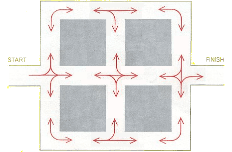

Easy Maze 4:Travel along the roads from START to FINISH. At each intersection follow one of the arrows. That is, you can turn in a certain direction only when there is a curved line in that direction, and you can go straight only when there is a straight line. U-turns are not allowed. 
Okay—I said that the mazes here would be easy, but I never said the commentary about them would be easy. So, the commentary here gets a little complicated: The rules for this maze go back to a puzzle of mine that appeared in Martin Gardner’s column in the October, 1962, Scientific American. It was an early example of a “maze-with-rules,” a form of puzzle that has now become quite widespread. There were precedents before 1962, but none of the precedents were also multi-state. “Multi-state” here means that you can be at one point in the maze, but you can be in more than one state depending on how you got to that point. Ed Pegg, Jr believes that the Back to the home page. |